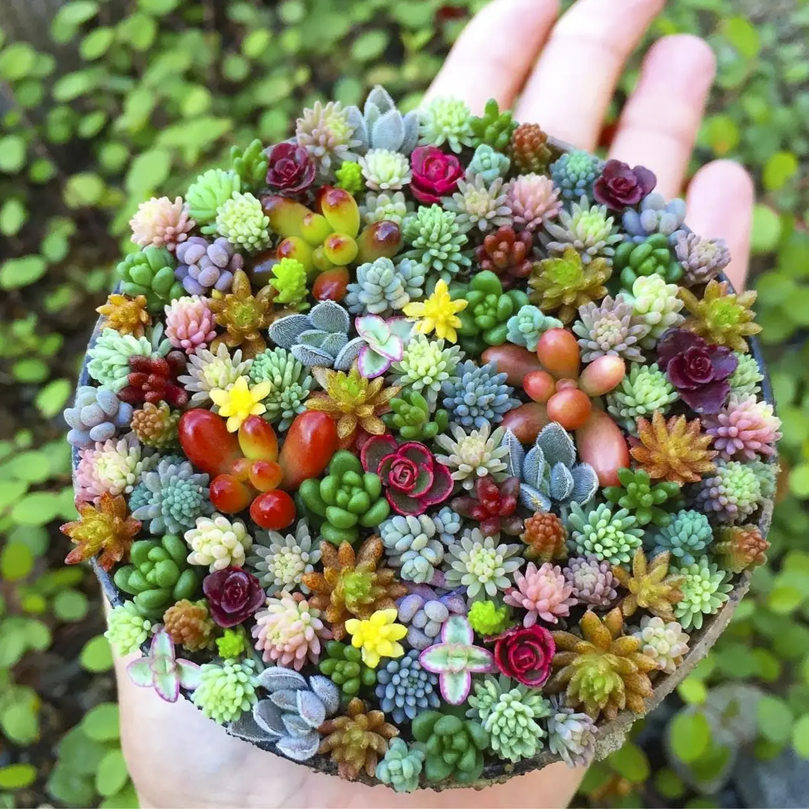

As plantas suculentas são plantas de fácil cultivo, necessitando de pouca rega e possuem grande capacidade de adaptação a diferentes ambientes. Existem inúmeras espécies, de diferentes tamanhos, cores e formato. Por isso, as suculentas vêm sendo muito utilizadas como decoração.

O jardim de suculentas é uma proposta de paisagismo que tem se tornado tendência, afinal as plantinhas são fáceis de cuidar e garantem um aspecto lindo para diferentes estilos de jardins adicionando cor, volume, e charme aos jardins. Elas podem ser cultivadas tanto em vasos quanto diretamente em canteiros no jardim.


Elas são originárias de regiões de clima árido, onde predominam altas temperaturas. Devido a essa característica climática, as plantas desenvolveram adaptações para sobreviverem nesses ambientes , como pelos e espinhos, ou cera, para evitar a evaporação de água.